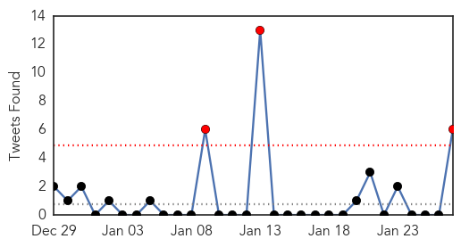
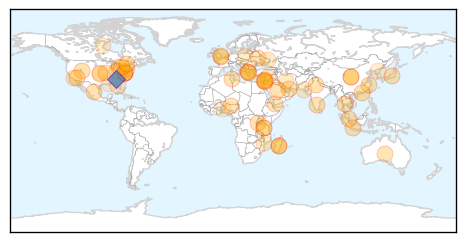
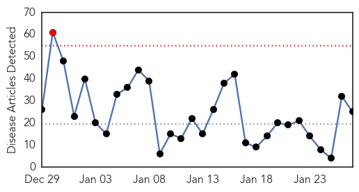
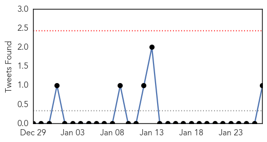

Unknown
30-Day Web Trend
0 alerts, 0 warnings

30-Day Twitter Trend
3 alerts, 0 warnings

Article Locations
Article Confidences

Top Articles:
- 0.988
- Flu kills 8 Hong Kong patients in one day, as infection rate hits 5-year high
- 0.958
- Plague cases rise in Madagascar, fear of more epidemics: WHO
- 0.957
- Plague cases rise in Madagascar, fear of more epidemics - WHO
- 0.946
- North America Confirms First Case of Bird Flu in Woman After China Trip
- 0.945
- Disease that killed Lockhart lurks, remains unpreventable
- 0.925
- No more cases of Norovirus at Eliot
- 0.922
- Agency officials respond to STD outbreak
- 0.922
- Streptococcus: What it is and why chickenpox raises risk
- 0.920
- Canada resident tests positive for H7N9 avian flu virus
- 0.917
- Chicago Tribune
- 0.917
- Chicago Tribune
- 0.917
- Chicago Tribune
- 0.917
- Chicago Tribune
- 0.917
- Chicago Tribune
- 0.917
- Chicago Tribune
- 0.917
- Chicago Tribune
- 0.917
- Chicago Tribune
- 0.917
- Chicago Tribune
- 0.917
- Chicago Tribune
- 0.917
- Chicago Tribune
- 0.917
- Chicago Tribune
- 0.917
- Chicago Tribune
- 0.917
- Chicago Tribune
- 0.917
- Chicago Tribune
- 0.917
- Chicago Tribune
- 0.917
- Chicago Tribune
- 0.917
- Chicago Tribune
- 0.917
- Chicago Tribune
- 0.914
- KFD vaccination guidelines relaxed to tackle its spread more effectively
- 0.913
- Rabies Vaccine Fails in Rare Death
- 0.910
- The world windows to Thailand
- 0.897
- Chinese Military Hospital in Lockdown Over Suspected SARS Cases
- 0.866
- Yemen's Houthi fighters free presidential chief of staff -official
- 0.865
- Listeria ride on American apples Stop eating apples; it’s not worth the risk
- 0.862
- NewsDaily
- 0.862
- NewsDaily
- 0.862
- NewsDaily
- 0.854
- Aust woman acquitted of child abduction
- 0.849
- Ghana moves to ban Nigerian poultry over bird flu scare
- 0.825
- Visiting restrictions in place at mayo general hospital
- 0.796
- Cambridge Memorial Hospital declares enteric outbreak
- 0.726
- Dog disease in lions spread by multiple species
- 0.722
- UN agencies ramp up aid efforts to flood-hit Southern Africa countries
- 0.710
- Cumberland Infirmary cancels operations over norovirus outbreak
- 0.702
- Hospitals to have rankings>
- 0.693
- IS group video gives Japanese hostage 24 hours to live
- 0.693
- IS group 'dreams of fighting the West on the ground’
- 0.689
- Video: Russia bans Ukraine salt as 'unsanitary'
- 0.685
- French town of Lunel under spotlight after terrorism raid
- 0.681
- Plant High School: Possible TB exposure reported, 150 students may need testing
Showing top 50 articles...
Top Tweets:
- 0.817
- .@SureAmGrumpy If the flu viruses circulating are very different from the vaccine viruses, the flu vaccines won’t work as well. FIGHTFLU
- 0.694
- Vaccination prevented about 7.2 million flu illnesses last flu season. FightFlu GetAFluVax http://t.co/7opDbsmRgl
- 0.683
- .@Techtembo888 Flu is generally worse than a cold; symptoms like fever, body aches, extreme tiredness are more common w/ flu. FightFlu
- 0.666
- .@SureAmGrumpy Each year, experts select the strains to include in the flu vaccine months before the start of flu season. FIGHTFLU
- 0.591
- RT: Transmission of Corona-MERS virus from camels to humans is rare... - Study https://t.co/xOMuJB41af h/t Shiloh coronav…
- 0.560
- .@Techtembo888 No, the flu vaccine will not interfere with cholesterol meds. FightFlu
- 0.537
- RT: En pocos minutos anunciamos proyecto de colaboración UPR / AAA de gran beneficio para nuestros estudiantes. ¡Pendientes! @A…
- 0.533
- Remember:Flu is serious. If sick w/ flu, early treatment w/ antivirals could be the difference b/w life & death for high risk ppl FightFlu
- 0.532
- .@SureAmGrumpy About 64% of H3N2 viruses are antigenically drifted from the H3N2 virus component used in the 14-15 flu vaccine. FightFlu
- 0.518
- RT: Canada resident tests positive for H7N9 avian flu virus http://t.co/XDp5EPWQ1T
Influenza
30-Day Web Trend
1 alerts, 0 warnings

30-Day Twitter Trend
0 alerts, 0 warnings

Article Locations

Article Confidences

Top Articles:
- 1.000
- Flu cases double to 2,372 in El Paso, health officials say
- 0.999
- DHMC Units Beset By Flu
- 0.997
- Santa Clara County records first flu death, patient under 65
- 0.997
- Santa Clara County's first flu death of season
- 0.997
- Coeur d'Alene Press: Local News
- 0.995
- 16 Die of Flu-related Diseases Statewide, None in Magic Valley
- 0.992
- First Case of Human Bird Flu in North America Confirmed, a Second Possible
- 0.992
- Ethicist Wants Mandatory Flu Shots for Health Workers
- 0.988
- UN Warns of Bird Flu Increase in China
- 0.987
- Human infection with avian influenza A(H7N9) virus – China
- 0.985
- Gaping holes exist in Maine's readiness for a public health emergency
- 0.973
- Schools Get A Day Out For Snow, But Not Likely For Influenza
- 0.970
- CHP closely monitors first human case of avian influenza A(H7N9) in Canada
- 0.956
- H7N9 Avian Flu Virus Enters Canada, B.C. Woman Who Travelled To China Tests Positive
- 0.932
- Flu Scan for Jan 27, 2015
- 0.832
- Seasonal influenza: 13 deaths since the beginning of January
- 0.811
- Canada Confirms First Case of H7N9 Bird Flu in North America
- 0.810
- Canada has its first case of Avian flu
- 0.766
- North America has 1st case of H7N9 bird flu
- 0.726
- Avian Influenza Outbreak Confirmed In Ogun
- 0.722
- Nigeria, Israel, West Bank fight avian flu in poultry
- 0.695
- Ogun Government Confirms Bird Flu In Ota, Sagamu, Others
- 0.675
- TB case confirmed in Vermont school worker
- 0.631
- Agencies Scramble to Contain Bird Flu
- 0.611
- Canada reports first H7N9 case
Top Tweets:
- 0.511
- RT: Dr Chan: Currently we face threats from MERS, new strains of avian influenza, human cases H5N1, H7N9 w/ high fatality rate EB…